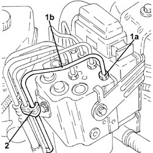
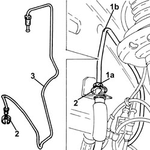
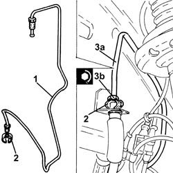
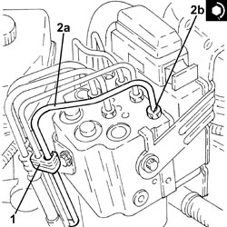

3340B55 RIGID PIPE FROM HYDRAULIC CONTROL UNIT TO LEFT FRONT BRAKE - R.R.
- Path
- Procedures > 33 BRAKES > 3340 ANTI-LOCK BRAKING SYSTEM (ABS) > 3340B ABS SYSTEM PIPES > 3340B55 RIGID PIPE FROM HYDRAULIC CONTROL UNIT TO LEFT FRONT BRAKE - R.R.
- Kind
- repair procedure (removal / refitting; the operation number is the code)
- Applies to
- all engines; all production periods
- Interactive page
- https://sloeber94.github.io/elrnDB-fCrm/en/#/194000505
Applies to: all engines; all production periods
 Removing
Removing
 Refitting
Refitting- Position the vehicle on a lift.
Op. 4450B02 LEFT FRONT WHEEL - R.R
Op. 7055B90 LEFT FRONT WHEEL ARCH LINER - R.R.
- Replace the brake-clutch fluid reservoir plug using the tool.
Tool | Description | Function | Validity |
|---|---|---|---|
2000001400 | Plug | Brake/clutch fluid reservoir cap |
1. Undo the connector (1a) and disconnect the rigid pipe from the hydraulic control unit to the left front brake (1b), hydraulic control unit side.
2. Release the rigid pipe from the hydraulic control unit to the left front brake from the fastenings on the engine compartment.

Applies to: all engines; all production periods
1. Undo the connector (1a) and disconnect the rigid pipe from the hydraulic control unit to the left front brake (1b), flexible pipe side.
2. Withdraw the flexible pipe retaining clip.
3. Working in the wheel arch, remove the rigid pipe from the hydraulic control unit to the left front brake.

Applies to: all engines; all production periods
Refitting
Removing1. Place the rigid pipe from the hydraulic control unit to the left front brake in position.
2. Refit the flexible pipe retaining clip.
3. Connect the rigid pipe from the hydraulic control unit to the left front brake (3a), flexible pipe side and tighten the connector (3b) to the recommended torque.
Component | Fastening | dia | Value (daNm) | Validity |
|---|---|---|---|---|
Brake pipe connectors | Connector | M10/M12 | 1.4 ÷ 1.8 |

Applies to: all engines; all production periods
1. Secure the rigid pipe from the hydraulic control unit to the left front brake using the fastenings on the engine compartment.
2. Connect the rigid pipe from the hydraulic control unit to the left front brake (2a), hydraulic control unit side and tighten the connector (2b) to the recommended torque.
Component | Fastening | dia | Value (daNm) | Validity |
|---|---|---|---|---|
Brake pipe connectors | Connector | M10/M12 | 1.4 ÷ 1.8 |

Applies to: all engines; all production periods
- Replace the tool with the brake-clutch fluid reservoir cap.
Tool | Description | Function | Validity |
|---|---|---|---|
2000001400 | Plug | Brake/clutch fluid reservoir cap |
Op. 7055B90 LEFT FRONT WHEEL ARCH LINER - R.R.
Op. 4450B02 LEFT FRONT WHEEL - R.R
Op. 0010T64 BRAKE AND/OR CLUTCH FLUID CHECK LEVEL AND TOP UP AS NECESSARY
Op. 0010T65 HYDRAULIC BRAKE SYSTEM - BLEED AIR
- Remove the vehicle from the lift.